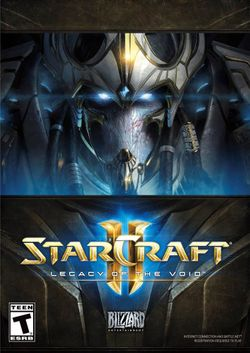
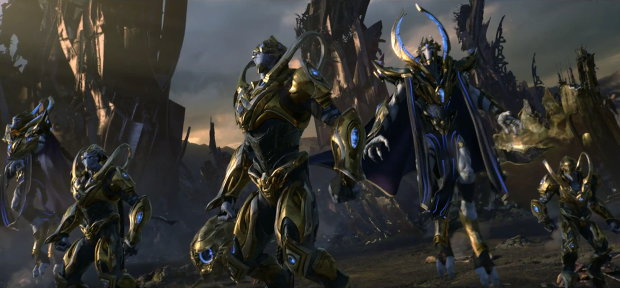

Zerg(저그)
Zerg(저그) Terran(테란)
Terran(테란)



다른 종족을 압도하는 초월적인 기술력을 갖추고 있으며, 기술력을 뺀 개개인만을 놓고 보더라도 판타지에 나올 법한 각종 초능력을 구사하며, 압도적인 신체 능력을 갖추고 있는 막강한 종족. 설정만 보면 은하계에서 맞설 적수가 없는 종족이다.
우주 문명의 척도 기준으로 보면 제II유형(모 항성의 모든 에너지와 항성계의 모든 자원을 사용)이나 되는 문명 수준을 이뤘었던 종족이다. 전성기 시절의 프로토스는 인공 항성을 동력원으로 쓰는 함선들을 만들어낼 정도로 발달한 문명이었으나, 여러 우여곡절 끝에 이야기가 시작될 시점에서는 이때 기술력을 거의 잃고 문명이 상당히 쇠퇴한 상태이다. 현 프로토스 최고의 기술자인 카락스조차 고대 프로토스들이 만든 태양 핵의 구조를 완전히 이해하지 못할 정도다.[
물론 프로토스가 너무 강하면 테란과 저그가 쩌리가 되어 밸런스가 맞지 않고 작품의 전개가 어려워지는 탓에 프로토스에게는 여러 제약사항이 붙어있다. 일례로 과거 전성기 시절의 프로토스는 물론 현재 시대의 쇠퇴한 프로토스도 다른 종족보다 훨씬 우수한 기술[7]을 갖추었지만 그 근원이 외부의 초월자인 젤나가의 비호 아래에 이뤄진 탓인지 굉장히 보수적이고 종교적인 성향을 띠고 있으며, 이 때문에 프로토스는 종교적이나 여러 윤리적인 이유로 각종 금기를 가지고 있으며 이를 근거로 자신들의 고도화된 기술을 활용을 하지 않을 때가 많다.[8] 그나마 대전쟁으로 아이어와 함께 프로토스 세력이 크게 몰락한 이후에나 부랴부랴 옛 시대의 금기를 철폐하고 과거의 전투 병기를 발굴해 사용하거나 신규 병기나 기술을 개발하는 등 보다 유연한 행보를 보이고 있다.
또한 뛰어난 기술력과는 별개로 본성인 아이어의 인구수가 채 십수억을 넘지 못할 만큼 인구수나 지배 영역의 규모는 약세한 편[9]이며, 군사적으로는 극도로 적은 인구 탓에 지상전에서는 전투원 수가 크게 부족한 등 물량 면에서 약점이 있고, 사회적으로는 극도로 경직된 사회구조 및 윤리관을 비롯해 자신들의 능력을 자신들이 제약하는 등의 많은 문제점을 내재하고 있었기에 이 약점을 저그에게 허를 찔려 크게 당하고 만다.[10] 이 패배로 수도이자 산업기반인 아이어의 핵심적인 인프라를 상실[12]하여 괴멸적인 타격을 입은 이후에는 기술력으로는 야만인 수준에 불과한 테란에게도 간혹 애를 먹는 등 초월적인 기술력이 초라해질 정도로 몰락하기도 했다. 야생화된 저그가 아이어에 눌러앉고, UED나 자치령을 비롯한 테란 군 세력들이 아이어를 소풍 온 것처럼 지나다니는 등 전성기의 프로토스 문명이었다면 감히 상상도 못할 정도의 추태를 보이기도 했을 지경.
애향심이 매우 강한 종족이기도 한데, 사실 대전쟁 당시에도 프로토스는 함대 전력에서 저그를 압도할 수 있었기에 아이어의 저그를 마음만 먹으면 행성정화 등으로 완전히 삭제해버릴 수 있었으나, 행성정화는 곧 프로토스가 일궈낸 영광들의 상징인 아이어의 파괴를 의미하기에 그런 수단을 선택할 수 없었던 것이다. 심지어 이런 애향심은 아이어를 떠나 생활한지 수천년이 지난 상태인 네라짐이나 탈다림들도 어느정도 가지고 있을 정도로, 애향심이 종족 특성 수준으로 박혀있다고 봐도 무방하다.